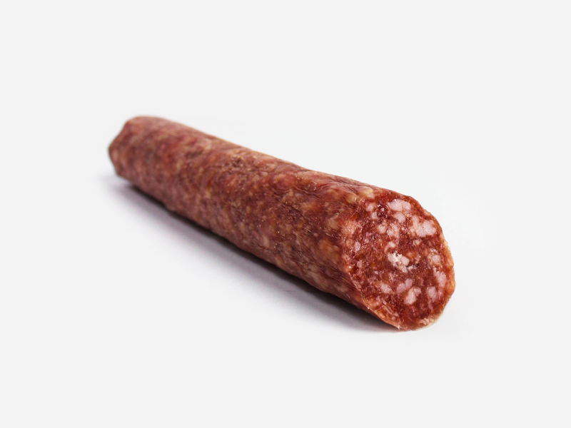

|  |
|
Сначала колбаса была без оболочки: просто брали кусок мяса, хорошо его просаливали, а затем сушили — то есть вялили. Затем кто-то из персов открыл для себя, что мясо сохраняется лучше, будучи помещенным в пленку обработанной кишки животных. Когда древние римляне познакомились с кулинарией Востока, они переняли этот рецепт, ставший основой всех будущих европейских колбас. Но всё же самой уважаемой в древности считалась сыровяленая колбаса из мелкорубленого фарша и сала со специями. Римляне делали также копченые колбаски, наполненные мясным фаршем с огромным количеством пряных трав, жира и специального соуса. А их потомки в XVI веке создали один из самых популярных видов копченой колбасы — знаменитый сервелат, отличающийся методом приготовления и избытком восточных пряностей: перцев, гвоздики, мускатного ореха, кардамона. У бедняков в Средневековье в Византии самой доступной считалась кровяная колбаса, а простолюдины во Франции ели дешевую колбасу, начиненную полосками желудка и требухой коров или свиней. Наиболее сильно в средние века продвинулись в технологии приготовления различных колбас немцы. К примеру, они догадались перемалывать требуху животных в фарш, добавляли туда сало и перец, изобретя таким образом ливерную колбасу. Немцам так же принадлежит идея создания сосисок, которые, по сути, являются мини-колбасками. Вареные и вяленые, прикопченые и копченые, жареные и тушеные сосиски быстро стали главным блюдом немецкой и австрийской кухни. Продолжение следует... |